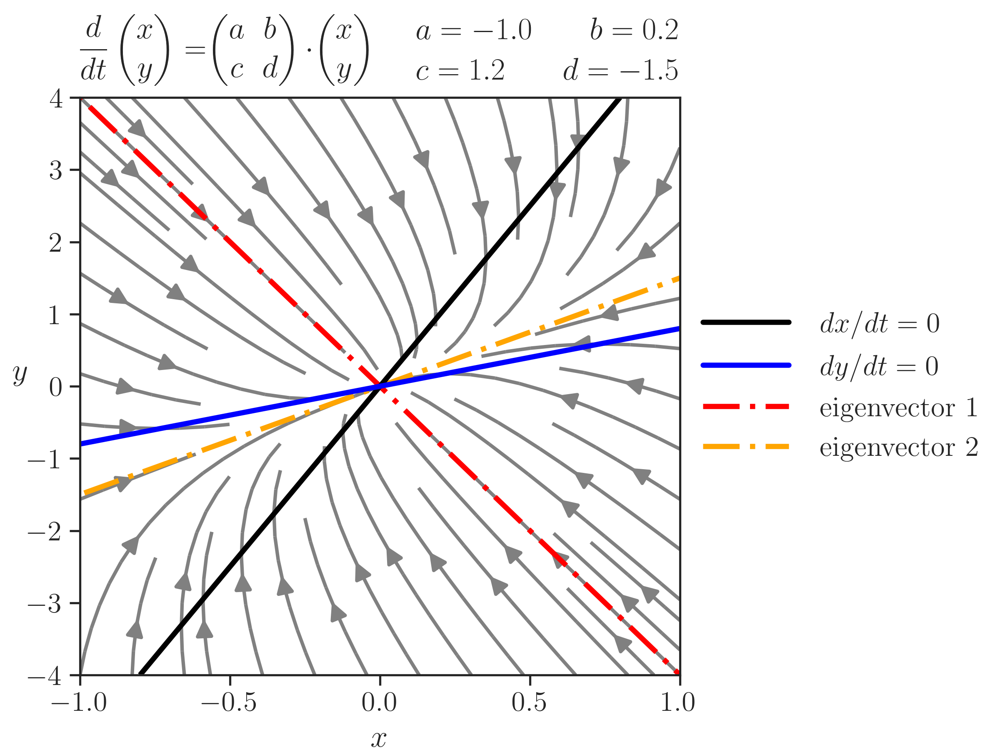

import matplotlib
import matplotlib.pyplot as plt
import numpy as np
import seaborn as sns
sns.set(style="ticks", font_scale=1.5)Streamplot
Streamplot of a two-dimensional linear system

Introduction
Streamplot of a two-dimensional linear system, with eigenvectors and nullclines. Python shows LaTeX equations beautifully.
Main features: meshgrid, streamplot, contour, legend, LaTeX
The code
make graph look pretty
# learn how to configure:
# http://matplotlib.sourceforge.net/users/customizing.html
params = {
'font.family': 'serif',
'ps.usedistiller': 'xpdf',
'text.usetex': True,
# include here any neede package for latex
'text.latex.preamble': r'\usepackage{amsmath}',
}
plt.rcParams.update(params)define parameters, system of equations, and equation for eigenvectors
%matplotlib widget
fig, ax = plt.subplots(figsize=(8,6))
fig.subplots_adjust(left=0.08, right=0.68, top=0.87, bottom=0.10,
hspace=0.02, wspace=0.02)
# parameters as a dictionary
p = {'a': -1.0, 'b': +0.2,
'c': +1.2, 'd': -1.5}
# the equations
def system_equations(x,y):
return [p['a'] * x + p['b'] * y,
p['c'] * x + p['d'] * y,
]
# eigenvectors
eigen_vec = 100 * np.array([
[(p['a'] - p['d'] -
np.sqrt((p['a'] - p['d']) ** 2 +
4.0 * p['b'] * p['c'])) /
(2.0 * p['c']), 1.0],
[(p['a'] - p['d'] +
np.sqrt((p['a'] - p['d']) ** 2 +
4.0 * p['b'] * p['c'])) /
(2.0 * p['c']), 1.0],
])
min_x, max_x = [-1, 1]
min_y, max_y = [-4, 4]
divJ = 50j
div = 50
# 1st way
# Y, X = np.mgrid[min_y:max_y:div,min_x:max_x:div]
# 2nd way
X, Y = np.meshgrid(np.linspace(min_x, max_x, div),
np.linspace(min_y, max_y, div))
# streamplot
density = 2 * [0.80]
minlength = 0.2
arrow_color = 3 * [0.5]
ax.streamplot(X, Y, system_equations(X, Y)[0], system_equations(X, Y)[1],
density=density, color=arrow_color, arrowsize=2,
linewidth=2, minlength=minlength)
# eigenvectors
eigen_0, = ax.plot([eigen_vec[0, 0],-eigen_vec[0, 0]],
[eigen_vec[0, 1],-eigen_vec[0, 1]],
color='red', lw=3, ls="--")
eigen_1, = ax.plot([eigen_vec[1, 0],-eigen_vec[1, 0]],
[eigen_vec[1, 1],-eigen_vec[1, 1]],
color='orange', lw=3, ls="--")
dash = (7, 2, 1, 2)
eigen_0.set_dashes(dash)
eigen_1.set_dashes(dash)
# nullclines
null_0 = ax.contour(X, Y, system_equations(X, Y)[0],
levels=[0], colors='black', linewidths=3)
null_1 = ax.contour(X, Y,system_equations(X, Y)[1],
levels=[0], colors='blue', linewidths=3)
n0, = ax.plot([100,101], [100,101], color='black', linewidth=3)
n1, = ax.plot([100,101], [100,101], color='blue', linewidth=3)
# some text
ax.text(0.0, 1.02, (r"$\displaystyle\frac{d}{dt}\begin{pmatrix}x\\y\end{pmatrix}=$"
r"$\begin{pmatrix}a&b\\c&d\end{pmatrix}\cdot$"
r"$\begin{pmatrix}x\\y\end{pmatrix}$"),
transform=ax.transAxes, va="bottom")
ax.text(1.0, 1.1, r"$a={:.1f}\qquad b={:.1f}$".format(p['a'], p['b']),
transform=ax.transAxes, ha="right")
ax.text(1.0, 1.03, r"$c={:.1f}\qquad d={:.1f}$".format(p['c'], p['d']),
transform=ax.transAxes, ha="right")
ax.legend([n0, n1, eigen_0, eigen_1],
[r'$dx/dt=0$', r'$dy/dt=0$',
r"eigenvector 1", r"eigenvector 2"],
loc="center left",
bbox_to_anchor=(1.0,0.5),
frameon=False, fancybox=False, shadow=False, ncol=1,
borderpad=0.5, labelspacing=0.5, handlelength=3, handletextpad=1.1,
borderaxespad=0.3, columnspacing=2)
ax.set_ylabel(r"$y$", rotation='horizontal')
ax.set_xlabel(r"$x$", labelpad=5)
ax.axis([min_x, max_x, min_y, max_y])
fig.savefig("streamplot.png", dpi=300)